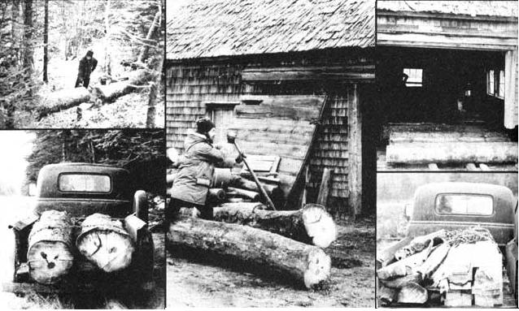

We Built Two Cabins...For $100 Each
By the Mother Earth News editors
September/October 1976
How to move two families from city apartments to country cabins for less than a month's rent, as told by Paul Scanlon and Bob Leveque.
Not long ago, "home" to us was an apartment overlooking one of Toronto's busiest thruways. It's hard for us to believe now, but we actually paid $200 per month to live there, listen to the constant roar of cars and trucks, and breathe their noxious exhaust fumes!
Today our families live on 20 wooded acres near a river in Nova Scotia. Our dwellings-a couple of 1-1/2-story cabins that we went 50-50 on-cost us less than $100 each to build. We have everything in the way of conveniences we want ... and as far as we're concerned, the cabins are more aesthetic than any apartment building could ever be.
How did we manage to build our homes for so little out-of-pocket money? There's no "trick" involved. All we did was harvest our construction materials directly from nature and perform 100% of the work ourselves.
Before we built our lodges, we carefully surveyed our future homestead. And we came to the conclusion that most-if not all-of our lumber needs would be met if we could [1] utilize numerous blowdowns (trees that'd been laid on their sides by strong winds), and [2] thin some of the timber on the thickly wooded land. We probably wouldn't have to cut any really "good" trees at all!
Next, we did some inquiring and found that there was a small sawmill just three miles from our property. Since the owner of the mill was about as short of help as we were skimpy on cash, it didn't take us long to arrive at a barter: The two of us would work two weeks of afternoons at the mill in exchange for the "no charge" sawing out of our logs.
With these details taken care of, we set out to do some logging. Despite the fact that parts of our woods resembled a dense jungle (which really needed thinning), getting to the work area was no problem ... thanks to a few old logging trails which had lain dormant for many years. We simply parked our pickup, walked into the forest, chose about 20 red spruce, and began felling them.
The only trouble was, the trees had grown so close together that-in the process of dropping a few of them-we frequently managed to snag and catch the tops of our falling trees in the branches of the live ones which we wanted to leave standing. When this occurred, we'd dislodge the entangled spruce by attaching a rope to it as high as possible and then pulling it down by hand or-when practicable-with a truck. (Should you ever find yourself in a similar situation, DON'T try to shake the snagged tree down by climbing up on its trunk, or you could easily wind up underneath the falling mass, since trees often tend to twist as they drop.)
We found that a simple wedge could be used to head off most of these felling problems before they happened. By driving one or two of the tools into the cut we made as we sawed a tree down, we could "steer" the spruce in the direction we wanted it to go. The wedges also helped us keep our saws from being pinched and stuck and-in general-aided in preventing dangerous situations from developing.
As each tree was felled, we'd limb it, cut it into six- to nine-foot sections (the longest lengths that the sawmill-and the two of us-could handle), and move the logs to a point where they could be loaded into the pickup.
The easiest way to get freshly felled timber from where it lies to where it can be hauled away is to skid it out with a tractor, a horse, or an ox. (Oxen are still quite popular in this area. They may be slow, but they're also quiet, dependable, hardworking beasts that can get the job done long after you've run out of oil and tractor parts.) We, however, haven't purchased an ox yet-and we didn't, at the time of our logging activity, own a horse or a tractor-so we ended up moving our logs with a couple of peavies and a good deal of muscle power. (A peavy, of course, is one of those pointed poles with a cant hook at the end which you ram into a log so that, by prying on the tool's "handle", you can turn the trunk over.)
Actually, the muscling out of the sections of downed trees wasn't nearly as big a job as you might think. What we did, you see, was cut one nice round log into a few two-foot-long "rollers". It was then a simple-and relatively easy-matter to raise even a nine-foot section of log enough to get a set of these rollers under it and "wheel" the heavy trunk right out of the woods! (if you've ever moved a big piece of furniture by slipping a piece of pipe under its front edge, pushing the massive weight forward until it runs off the roller, and then slipping the pipe back under the front of the weight again, you'll know exactly how we moved those logs.)
Hoisting our nine-foot-long chunks of wood into a truck was almost as easy. We just [1] laid a support timber on the ground parallel to the vehicle's tailgate, [2] balanced the larger log across it, and [3] backed the bed of the truck under the end of the balanced log.
After loading the truck each morning we'd deliver our cargo to the sawmill, spend three or four hours helping around the place, and leave at the end of the day with a truckload of fresh-cut lumber and slab (bark-covered boards).
We built our cabins' frames out of logs four to seven inches in diameter which were peeled and then notched together. For siding, we [A] nailed milled boards to the frame with three- to five-inch spaces between the planks, then [B] nailed down slabs over the gaps. This gave each building a distinctive and rustic appearance. For variety, we ran barkcovered slabs horizontally on one lodge and peeled slabs vertically on the other.
All told, we spent less than $20 (and most of that for gasoline) to obtain the 3,500 board feet of lumber used in our two homes. What really paid for the wood, of course, was our labor: four days spent hauling logs to the sawmill, and another two weeks of afternoons in labor at the mill.
Our only other cash expenses in building the two dwellings were for [1] nails, [2] all-weather roofing materials, and [3] tongue-and-groove flooring. Total money cost for both cabins: under $200.
You might say we've been able to fabricate our own homes in the country for less than a month's rent used to cost us in town. And we figure that ain't a bad deal at all!
|
 Photos below tell the story of how authors Paul Scanlon and Bob Leveque built their log cabins. Each morning for several days, Paul and Bob cut red spruce logs, loaded them into their truck, and hauled them to a sawmill. |
 Then,after working in the mill themselves, they'd take fresh-cut boards and slabs home and build with them. Result. Two sturdy, attractive all weather lodges like the one shown here in color . . . both of which ? together ? cost only $200. |
|